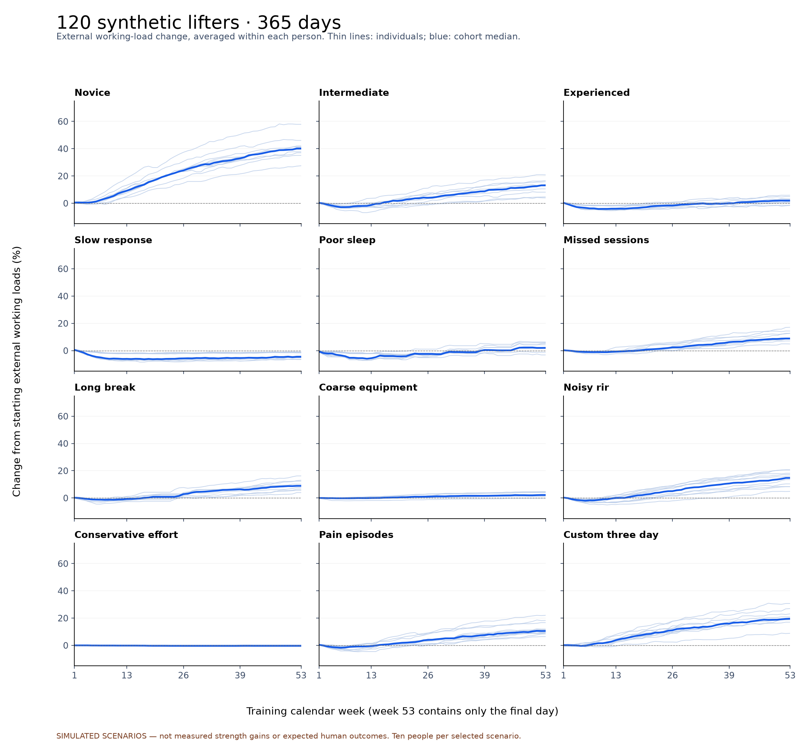

120 synthetic lifters · 365 days · real isolated account storage

External working-load changes, not measured 1RM or muscle gains. Ten simulated people per row.
| Scenario | Workouts (median) | Load change (median) | Individual range | Pivot weeks (median) | Equipment holds |
|---|---|---|---|---|---|
| novice | 250 | +40.1% | +27.5–+57.9% | 1.0 | 1.9% |
| intermediate | 244 | +13.1% | +3.9–+20.8% | 1.0 | 3.3% |
| experienced | 248 | +1.9% | -1.6–+5.9% | 1.0 | 7.5% |
| slow-response | 236 | -4.5% | -6.5–-0.9% | 1.0 | 13.8% |
| poor-sleep | 244 | +2.0% | -3.1–+6.4% | 25.0 | 5.3% |
| missed-sessions | 168 | +8.9% | +4.9–+17.1% | 0.5 | 6.5% |
| long-break | 217 | +8.9% | +4.0–+16.2% | 0.0 | 7.4% |
| coarse-equipment | 242 | +2.2% | -0.2–+4.7% | 1.0 | 41.1% |
| noisy-RIR | 244 | +14.7% | +4.9–+20.7% | 1.0 | 2.9% |
| conservative-effort | 238 | -0.3% | -0.9–-0.2% | 1.0 | 0.1% |
| pain-episodes | 245 | +10.6% | +6.4–+22.0% | 3.5 | 4.2% |
| custom-three-day | 147 | +19.6% | +8.9–+30.7% | 1.0 | 4.9% |
Full audit report · Summary CSV · Completed backend run
The account backups, detailed trajectories and sensitivity controls are saved alongside the research files. No live users or production training records were changed.